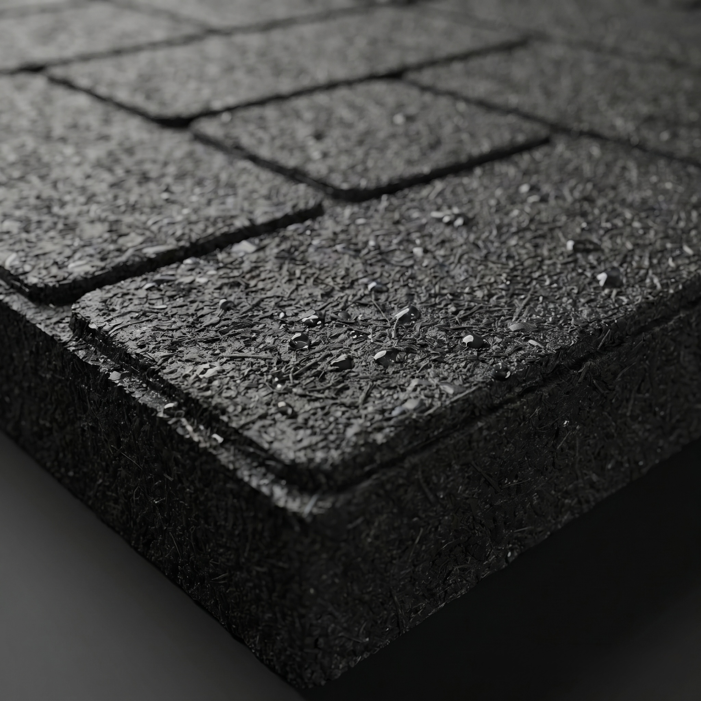
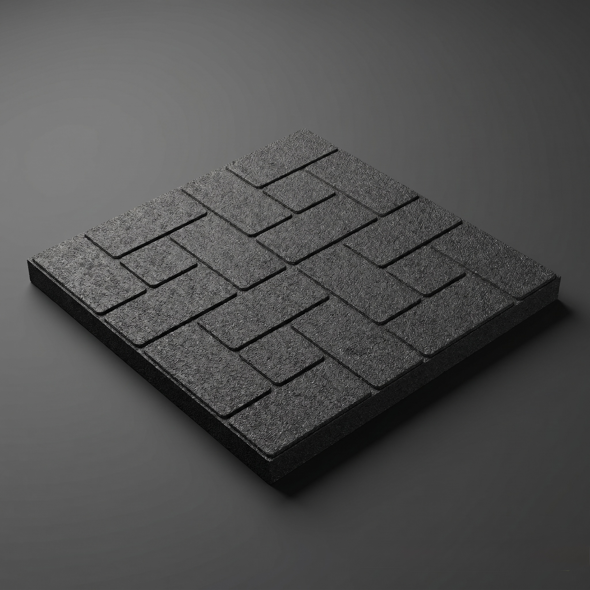

Baldosas de caucho reciclado que absorben impacto.
Una solución 100% sostenible contra accidentes domésticos.

Baldosa modular · caucho recicladoCaídas y resbalones domésticos son la principal causa de lesiones en niños y adultos mayores.
Baldosas de caucho reciclado que absorben impacto.
Protejan a sus hijos y mayores sin sacrificar estilo
Geriátricos, guarderías, hospitales reducen riesgos
Circular economy: reutilizar residuos como recurso
Cinco drivers, un flujo de fondos a 10 años.
Cuánto valor está en juego (rango de VAN) según cada driver, de escenario adverso a favorable (±25%). Ranking de criticidad.
Precio y volumen son las palancas críticas: pueden destruir el VAN. La materia prima, pese a ser el insumo central, tiene impacto marginal. La disciplina de pricing y la ejecución comercial son lo que más protege al inversor.
$450M+
$280M+
Ventaja
Una misma baldosa, muchos espacios donde la seguridad importa.
Caída de -10% en precio → VAN negativo
Volatilidad en precio del caucho reciclado
Educación del consumidor en producto nuevo
Capacidad de llegar a 12.9k m²/mes
CauchoHogar SARACATUNGA sostenible y escalable.
Ronda Seed: $321M | Max Exp: $850M | Tickets: $900K - $7M